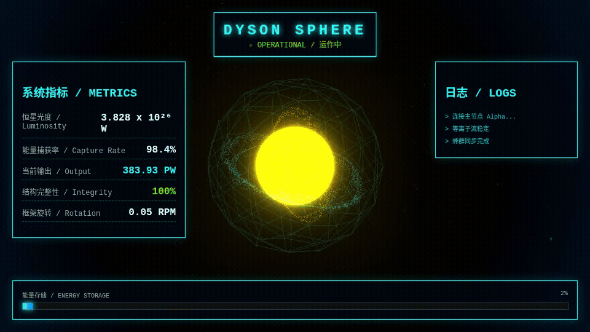

前端实验 · Demo
2025.11 · 同 prompt 跨模型对比
戴森球运作监控
Three.js 3D 球体 + 科幻监控台 UI · 站内可直接看交互预览
2025 年 11 月 Gemini 新模型上线，外网热议其前端代码能力。我用同一段提示词，对比同期多家大模型对本项目的前端呈现；下面动图是最终采用的交互预览，站内可直接体验，不必点仓库。

实验背景
不是业务上线产品，而是一次前端能力对照：固定同一段提示词，分别交给同期不同家的大模型生成戴森球运作监控页，再比较交互与视觉完成度。
最终评估：Gemini 的整体前端代码实现在当时确属第一梯队；本页展示的即为该路线留下的可交互 Three.js 监控台。
以下为按成品页反推复原的提示词（原对话未找回，非历史原文）。
请用单个 HTML 文件做一个「戴森球运作监控系统」前端页面，可直接在浏览器打开。 视觉与场景：全屏深空黑底、赛博朋克霓虹；Three.js 中心恒星轻微脉动，外层半透明线框戴森球壳，3 条不同轴向彩色粒子环自转；星空+雾效+Bloom；OrbitControls 拖拽/滚轮，并自动环绕。 界面 HUD（中英双语）：顶栏 DYSON SPHERE + OPERATIONAL/运作中；左侧指标（光度、捕获率、输出、完整性、旋转）；日志滚动；底部能量存储进度条；开场初始化遮罩后淡出；UI 不阻挡 3D 交互。 技术：单文件内联；Three.js 与 OrbitControls、EffectComposer/UnrealBloomPass 走 CDN；数值与日志定时模拟；自适应窗口；无后端。直接输出完整可运行 HTML。
完整版见 prompt-reconstructed.md · 反推复原，非历史原文 · 定稿前仍待说人话
时间锚点
对照发生在 2025 年 11 月 Gemini 新模型上线窗口；本地仓发版集中在 2025-11-20。旧 GitHub Pages 已 404，示例不挂死链。
对照 · 2025.11能力
3D 可视化
Three.js 球体结构，可旋转观察
能力
实时指标 UI
侧栏监控读数与科幻面板
能力
可交互
拖拽 / 滚轮 / 自动旋转
产品栏条目：有演示、有叙事的自研实验。项目源码：https://github.com/GAI810/Gai/tree/main/dyson-sphere-dashboard。联系：盖之怿（zhiyigai2@gmail.com）。